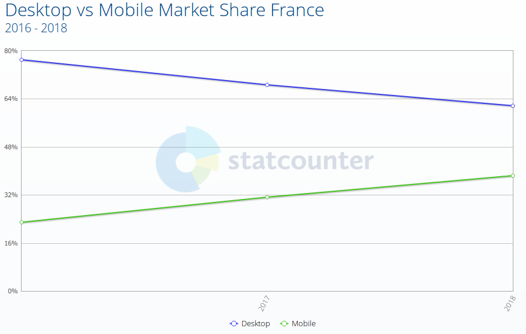
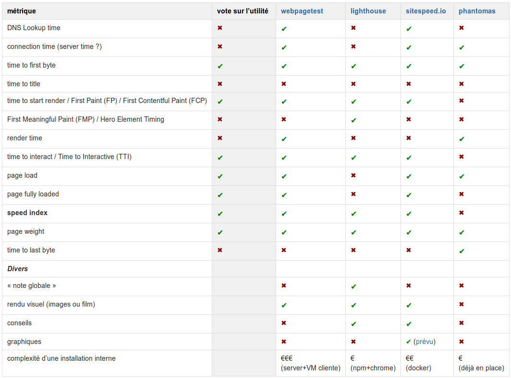
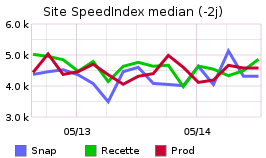
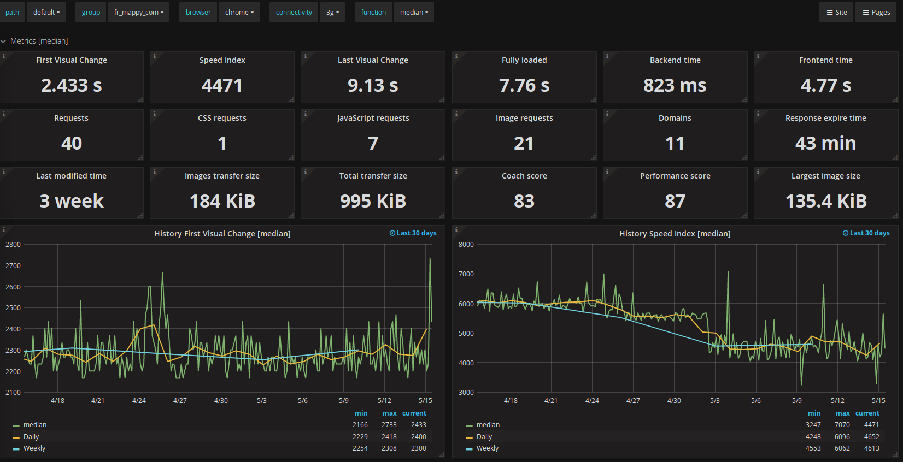

La Performance Web chez Mappy
Nous surveillons depuis longtemps la performance web (couramment abrégé « webperf ») sur le site mappy mais l’évolution des usages a mis ce sujet en haut de nos priorités.
L’usage du site a en effet changé ces dernières années avec de plus en plus de visites depuis des navigateurs mobiles.
Selon statcounter, l’audience mobile en France est passée de ~23 % en 2016 à ~38 % en 2018 :

Ainsi, un temps de chargement acceptable depuis un navigateur de « bureau » hier ne l’est plus forcément depuis un téléphone mobile avec une connexion cellulaire moyenne aujourd’hui.
Par ailleurs, Google a annoncé la modification de son index pour se baser sur les sites mobiles en priorité et tient compte de leur vitesse de chargement.
Nous avons mené plusieurs actions récemment pour améliorer la vitesse de chargement en commençant par la mise en place de mesure automatisée puis un cycle itératif entre des actions de performances web et la vérification de leur impact.
Des mesures automatisées
Via WebPageTest
Nous utilisons WebPageTest depuis 2015 à travers une installation locale.
Cet outil nous donnait satisfaction mais avec 2 contraintes :
- n’ayant pas trouvé de solution simple, nous notions manuellement chaque semaine certaines valeurs (speed index, temps de chargement, taille de la page) sur un tableau partagé,
- son installation, notamment pour maintenant lancer des tests sur des téléphones mobiles, est loin d’être une partie de plaisir.
WebPageTest n’étant pas idéal pour nos besoins (automatisation du relevé des métriques et lancement sur navigateurs mobiles), nous avons donc comparé WebPageTest avec LightHouse, SiteSpeed et Phantomas.
Nous utilisions déjà Phantomas pour vérifier que certains indicateurs de performance ne régressent pas (taille et nombres des JS/CSS, compression gzip, etc).
Le W3C a d’ailleurs standardisé une API (Navigation Timing API) permettant de recueillir une quantité assez impressionnante de métriques au sein du navigateur :

Voici la matrice que nous avons utilisée pour prendre notre décision quant aux métriques que proposent ces outils :

Et maintenant SiteSpeed

Nous avons au final porté notre choix sur SiteSpeed pour les raisons suivantes :
- il s’installe très facilement via Docker,
- il se lance en simulant un environnement mobile (taille du navigateur et bridage de la connexion),
- il effectue les métriques que nous jugeons nécessaires, ainsi que des rapports détaillés incluant une vidéo du chargement de la page comme le fait WebPageTest (exemple de rapport et d’une vidéo),
- il permet facilement d’exporter des graphiques à mettre sur notre « wall » (écran de supervision des métriques du site web).
Il ne restait plus qu’à programmer le lancement de SiteSpeed toutes les heures sur nos différents environnements et sur quelques pages de notre site.
Après un tir, SiteSpeed peut envoyer les métriques dans grafana, un outil de visualisation de données (dataviz).
Cela nous permet de générer un graphique présentant la moyenne des « speed index » sur notre « wall » pour suivre son évolution :

Ceci est une synthèse mais de nombreux autres graphiques sont disponibles :

Vous pouvez découvrir un exemple intéractif testant wikipedia.
Cette première étape finalisée, il est temps de passer aux optimisations, qui feront l’objet de prochains articles.